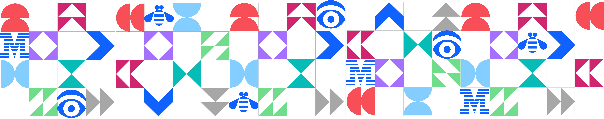

AI-Ready Context
watsonx 위에 올린 설명가능한
Agentic RAG + Knowledge Graph
Agentic RAG + Knowledge Graph
질문마다 벡터 · 그래프 · SQL 도구로 자동 라우팅하고, 답의 근거를 그대로 보여주는 데모.
Kiyeon Jeon · AI Engineer, IBM Client Engineering Korea
IBM TechXchange Korea 워크숍
IBM TechXchange Korea 워크숍
